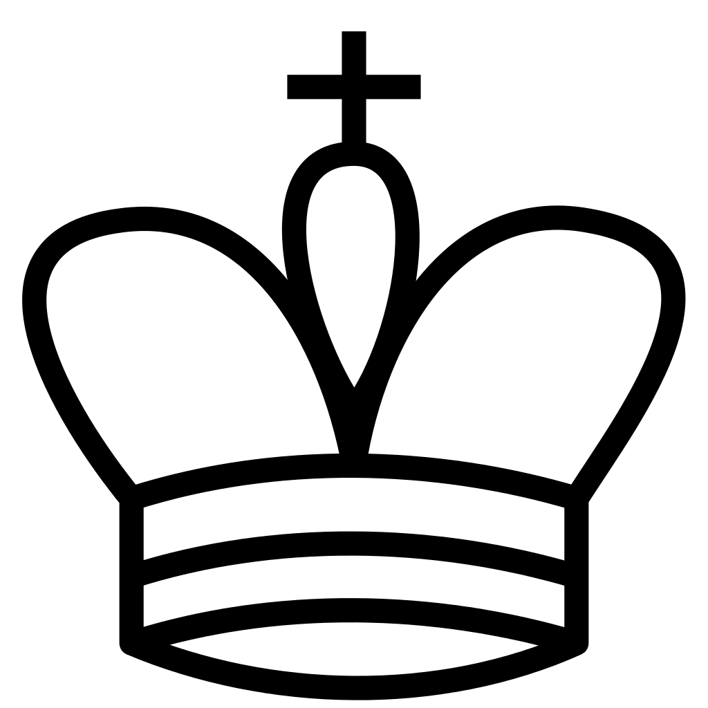
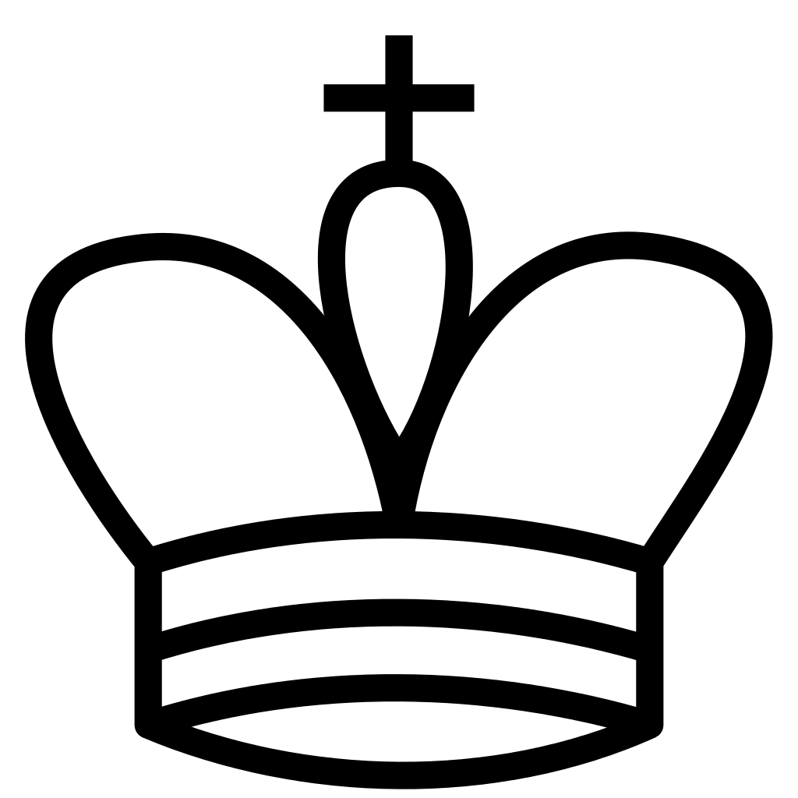
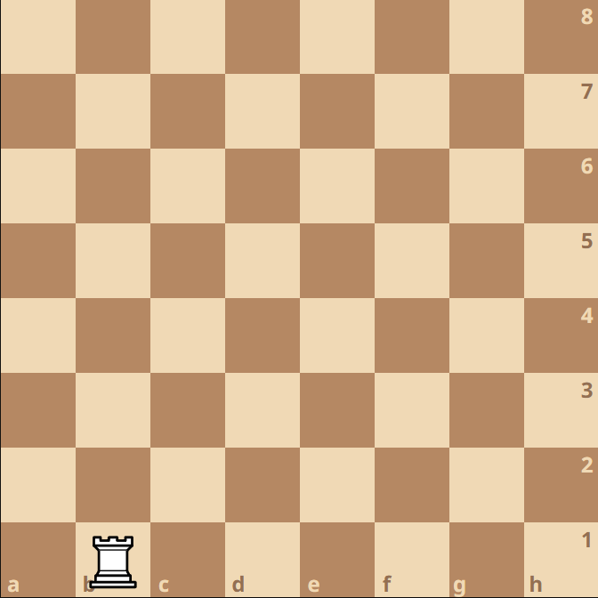

Pionek
Pionek porusza się 1 pole do przodu. Nie może poruszać sie do tyłu. Pion z pozycji wyjściowej może również wykonać ruch o dwa pola do przodu. Pion bije na ukos, jedno pole do przodu po lewej lub prawej jego stronie. Niezwykłym ruchem jest bicie w przelocie. Możliwość bicia w przelocie powstaje tylko wówczas, gdy pion jednej ze stron wykonał ruch o dwa pola, a pole, które minął, jest atakowane przez piona strony przeciwnej. Pion bijący w przelocie zajmuje to właśnie wolne pole, które minął pion zbijany.Skoczek
Ruch skoczka można opisać jako krok o jedno pole w pionie lub poziomie, a następnie drugi krok na ukos, w kierunku oddalającym go od pola startowego. Niekiedy mówi się, że porusza się on „po literze L”. Przemieszcza się zawsze na pole przeciwnego koloru, pole to jest dodatkowo najbliższym polem o przeciwnym do wyjściowego kolorze, z wyłączeniem z nim sąsiadujących. Skoczek, tak jak każda inna figura, bije bierkę przeciwnika zajmując jej pole i porusza się przy biciu według tejże reguły, co i przy zwykłym ruchu. Skoczek jest niezwykły w porównaniu z innymi bierkami szachowymi. W przeciwieństwie do innych figur szachowych skoczek może zignorować bierki stojące mu na drodze i przeskakiwać przez nie. Poza tym jest jedyną figurą, która może rozpocząć partię (inną bierką o tej możliwości jest pion).

Wieża
Wieża porusza się po liniach pionowych i poziomych, w dowolnym kierunku, o dowolną liczbę niezajętych pól. Wieża nie może przeskakiwać nad innymi bierkami. Wieża bije bierkę przeciwnika, zajmując jej pole. Uczestniczy również wraz z królem w specyficznym ruchu, zwanym roszadą.Goniec
Goniec porusza się wyłącznie po przekątnych pól, w dowolnym kierunku, o dowolną liczbę niezajętych pól. Gońce nie mogą przeskakiwać nad innymi bierkami. Goniec bije bierkę przeciwnika, zajmując jej pole.Hetman = Wieża + Goniec
Hetman może poruszać się w dowolnym kierunku (poziomo, pionowo oraz na ukos) o dowolną liczbę wolnych pól, jest więc jakby jednocześnie i gońcem i wieżą. Hetman nie może przeskakiwać nad innymi bierkami. Hetman bije bierkę przeciwnika, zajmując jej pole.Król
Król może poruszać się o jedno pole w dowolnym kierunku (pionowo, poziomo lub na ukos), nie może jednak wejść na pole atakowane przez bierkę przeciwnika. Jak wszystkie inne bierki, król bije bierkę przeciwnika wchodząc na pole przez nią zajmowane (z zastrzeżeniem, że nie może to pole być atakowane przez inną bierkę przeciwnika). Król może również wykonać specyficzne posunięcie, zwane roszadą.